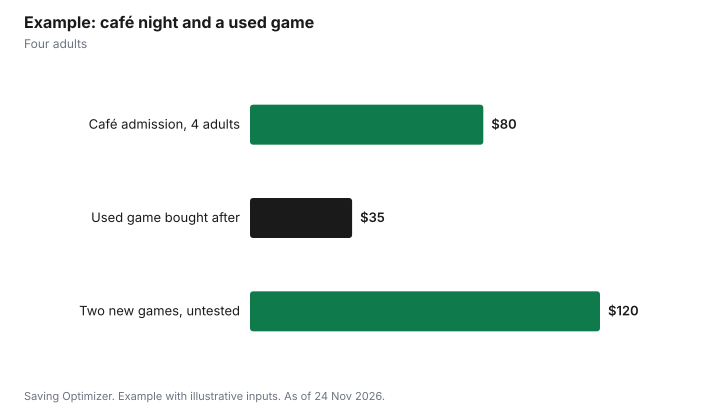

Entertainment · Canada
Board Games for Less: Cafés, Libraries and Swaps

Board game cafés, library loans and swaps let you play many games without buying each one. At Snakes & Lattes in Toronto, game admission was $20 when checked on 24 Nov 2026, and kids 12 and under play free with an adult who pays game admission. Use cafés and libraries to test games, then buy only the ones your group keeps asking for, ideally used.
Key takeaways
- Snakes & Lattes listed $20 game admission, with kids 12 and under free with a paying adult (checked 24 Nov 2026). Food and drinks are extra.
- Some public libraries lend board games or host game nights. Check your library's catalogue.
- Buy used games from Marketplace, thrift stores and game swaps, and count the pieces first.
- Work out cost per play: a $60 game played 30 times costs $2 a play.
- Example: four adults spend $80 on café admission, enough to try several games before buying one.
Cafés
A café fee covers access to a large library and staff who can teach rules. It's good value for testing new games or for a group outing, and poor value if you'd play one game you already own. Check reservation rules and group policies; Snakes & Lattes lists a credit card hold per guest for reservations and auto-gratuity for groups of 6 or more.
Libraries
Some Canadian libraries lend board games, and many host free game nights. Search your library catalogue for "board game" and ask about loan periods and what happens if a piece goes missing. For other free library services, see our cheaper books guide.
Used games and swaps
- Marketplace and Kijiji: check that all pieces are there. Many rulebooks list components.
- Thrift stores: low prices, but sealed bags or counted pieces are rare.
- Game swaps and local game groups: trade games you've finished with.
- Bring-and-play nights: one person's shelf becomes the group's library.
Cost per play
Divide the price by the number of times you'll play. A $60 game played 30 times costs $2 a play; a $40 game played twice costs $20 a play. Cafés and library loans tell you which games will get played before you spend. For more ideas, see movie and game night at home and cheap hobbies for adults.
Plan: an example group
Four adults play at a café for $20 each, $80 total, and try three games. They buy the one they liked best, used, for an example $35, and play it 20 times at home.

Café night: $80, or $20 each, for one evening. Used game: $35 over 20 plays is $1.75 a play for the whole group. Without the café night, they might have bought two new games at an example $60 each, $120, and played one of them twice.
Sources
- Snakes & Lattes College page ($20 game admission; kids 12 and under free with adult game admission; reservation holds and group gratuity), checked 24 Nov 2026.
Frequently asked questions
How much does a board game café cost in Canada?
Prices vary. Snakes & Lattes in Toronto listed $20 game admission, with kids 12 and under free with a paying adult, when checked on 24 Nov 2026. Food and drinks are extra.
Can you borrow board games from the library?
Some Canadian libraries lend board games, and many host free game nights. Search your library's catalogue.
How do I check a used board game?
Count the pieces against the rulebook's component list, check the board and cards for damage, and ask the seller about missing parts.
Is a board game café worth it?
It's worth it for trying new games, learning rules and group outings. It's poor value if you'd play a game you already own.
What is cost per play?
The price of a game divided by the number of times you play it. It helps you compare games and spend on the ones you'll use.
Researched and drafted with AI assistance and fact-checked against official Canadian sources. How we create content.
Note: Café prices and library services vary. Check before you go. Education only.